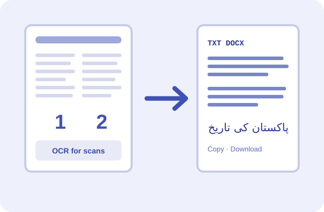

Pull every word out of a PDF in reading order. Scanned pages are read with OCR automatically.

A PDF text extractor copies every word out of a PDF into plain text you can edit, search or paste anywhere. PDFdukan reads typed text in true reading order and runs OCR on scanned pages automatically, all inside your browser.
Two-column papers come out column by column, not mixed line by line, and Urdu or Arabic keeps its right-to-left order with real letters.
Newsletters and research papers read down the left column, then the right.
Pages without a text layer go through OCR in 13 languages.
Join lines into paragraphs removes mid-sentence breaks and rejoins hyphenated words.
Type the PDF's password and the text comes out as normal.
| Item | Details |
|---|---|
| Input | One PDF, up to 200 MB |
| Output | Copy, UTF-8 .txt or Word .docx |
| OCR languages | English, Urdu, Arabic, Hindi and 9 more |
| Cost | Free, no sign-up, no page cap |
Use a page range when you only need one section; it's faster on long reports. For scans, pick the right OCR language before you start, because English OCR can't read Urdu letters. Keep Page markers on when you need to cite page numbers.
No. PDFdukan reads text with Mozilla's pdf.js and scans with Tesseract.js, both inside your tab. Only the OCR engine and language data download once; your file never leaves the device.
Tables come out as spaced lines, not cells. Handwriting and blurry phone photos give weak OCR. To keep layout and pictures, use PDF to Word.
Yes. It's free with no account, no watermark and no limit on pages.
Yes. Pages without a text layer are read with OCR automatically.
Plain copying mixes columns line by line. This extractor reads each column in turn.
Yes. Typed Urdu and Arabic keep right-to-left order, and scans can use Urdu or Arabic OCR.
Yes. Tap Download Word (.docx) to get one paragraph per line and a page break per page.
No. It copies text only. Use PDF to JPG for pictures.
Connect Google Drive to save selected outputs to your own Drive storage. Review the destination before uploading sensitive documents.
No account? Sign Up free